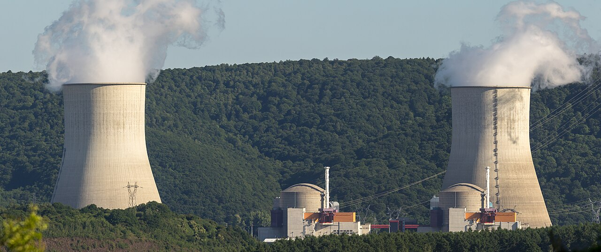

EDF's 2027 nuclear output guidance is sufficient to meet French demand on an annual basis, but not during cold, low-wind periods in winter. In those hours gas-fired plants set the marginal price, and at current TTF levels their fuel cost alone is approximately 180 EUR/MWh.
Gas as the marginal price setter
The French Cal-27 baseload contract (power delivered at a constant rate throughout 2027) has tracked TTF closely this year. It reached a low of 47.80 EUR/MWh on 2 December 2025 and has since risen 155% to 122.00.
The link runs through the merit order. Wholesale power prices are set by the marginal generator needed to meet demand, which for a significant share of hours is a gas-fired plant. As TTF rose from around 40 EUR/MWh in June to above 99 EUR/MWh in October, power prices followed. At current TTF levels, a combined-cycle gas plant operating at 55% efficiency incurs a fuel cost of roughly 180 EUR/MWh, before the cost of carbon allowances (currently around 72 EUR per tonne).
Cal-27 can only remain below 122 if French nuclear and renewable output is sufficient to keep gas off the margin for most hours. The evidence suggests this will not be the case during winter peak hours, which contribute most to the annual average price.
Nuclear adequacy: annual volume versus peak demand
EDF has largely completed repairs to the corrosion issues that reduced fleet availability in 2022, when output fell to around 320 TWh. It has guided to 360 to 400 TWh for 2027, compared with approximately 380 TWh in 2026. Even at the top of that range, nuclear generation covers around 70% of annual French consumption.
The binding constraint is peak demand rather than annual volume. During cold, low-wind periods, French demand can reach 85 to 90 GW, while nuclear typically supplies 55 to 60 GW in December and January. The remaining 25 to 30 GW must come from renewables, imports and gas-fired generation. If German exports to France are limited by the same gas tightness that underpins Trade 001, domestic gas plants become the price setter, and their costs are determined by TTF.
Entry and stop
The position was opened at 122.00 on 29 October, the first close above 120.00, a level the rally had failed to break in mid-October.
On 19 October the contract fell 13% in a single session to 93.75 before recovering to 111.40 the following day. A sharp fall followed by an immediate recovery suggests that utilities and industrial buyers were purchasing on weakness, which supports the view that the underlying demand is genuine.
The stop is set at 100.00, below the September to early October trading range of 88.00 to 100.85. A close below this level would most likely require either a substantial fall in TTF, which would also invalidate Trade 001, or an upward revision to EDF's 2027 guidance beyond its current range.
Target and risks
The target of 165.00 is consistent with TTF remaining above 90 EUR/MWh and nuclear output at the lower end of EDF's guidance, giving a reward-to-risk ratio of approximately 1.95 to 1. Above this level, energy-intensive French industry (aluminium, steel and chemicals) has historically reduced output, which limits further upside.
The principal risk is an upward revision to EDF's 2027 guidance at its Q4 2026 results, which would reduce the gas premium in the forward price. A mild winter would also lower TTF and pass directly through to power prices. The two positions are explicitly linked: if the storage thesis in Trade 001 is correct, it supports this trade, and a development that invalidates one is likely to invalidate the other.